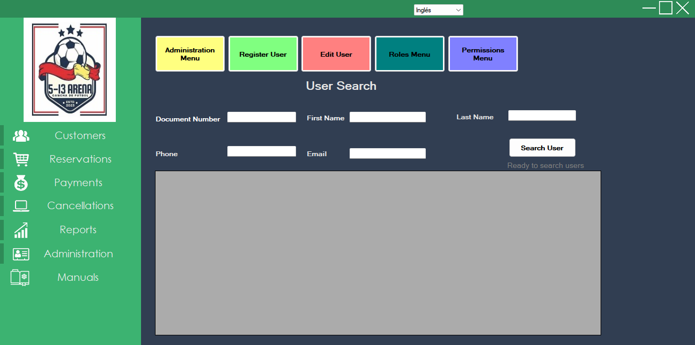
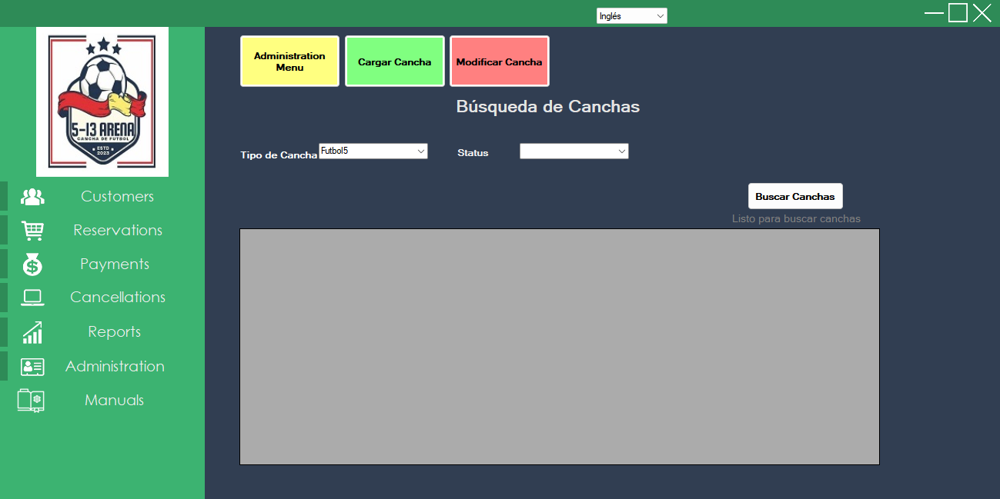
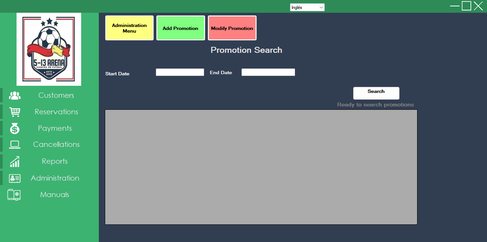
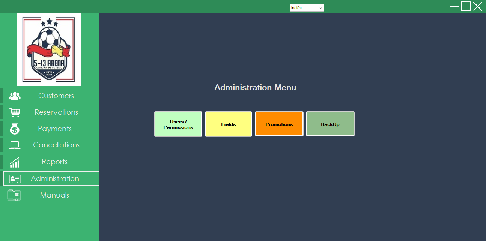

This module is used to manage structural parameters of the system.
You can search users by Document Number, First Name, Last Name, Phone or E-mail. From this screen you can:

Allows you to manage the catalog of fields (type, status, features and costs). Use Add Field for new records and Edit Field to update existing ones.

Allows you to create and edit promotions with validity periods and status. You can filter promotions by date range and status.

From this menu all users can download the available documentation:
